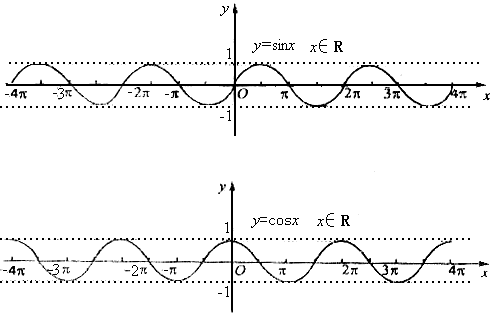
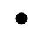
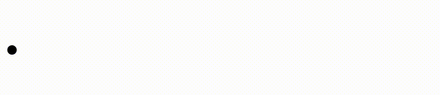
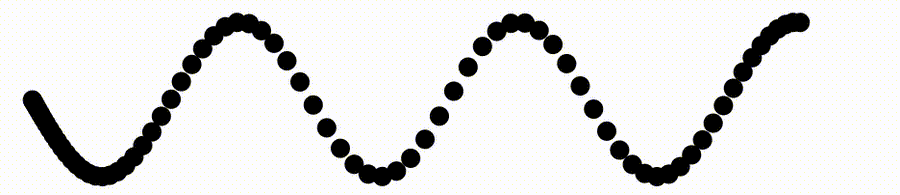
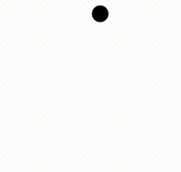
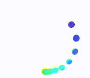
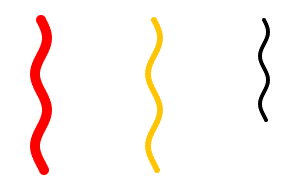
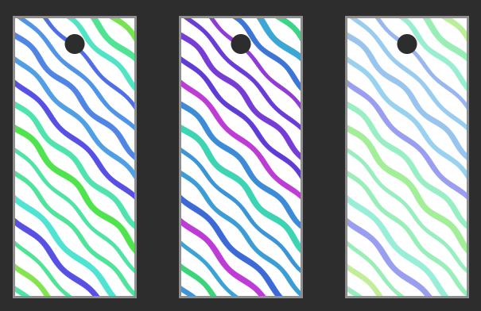
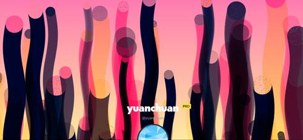
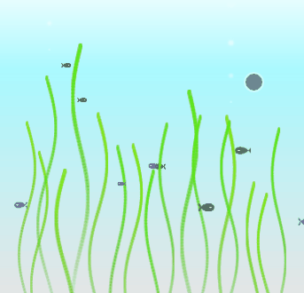

在 CSS 中，存在许多数学函数，这些函数能够通过简单的计算操作来生成某些属性值，例如 ：
- calc()：用于计算任意长度、百分比或数值型数据，并将其作为 CSS 属性值。
- min() 和 max()：用于比较一组数值中的最大值或最小值，也可以与任意长度、百分比或数值型数据一同使用。
- clamp()：用于将属性值限制在一个范围内，支持三个参数：最小值、推荐值和最大值。
在现代 CSS 解决方案：CSS 数学函数一文中，我们详细介绍了
- calc()
- min()
- max()
- clamp()
四个数学函数。
而本文，将给大家介绍一下最近各大浏览器也逐渐开始原生支持的三角函数：
- sin()
- cos()
- tan()
CSS 三角函数语法介绍
首先，我们来看看 CSS 三角函数的使用方式：
.box {
/* 设置元素的宽度为 sin(30deg) 的值 */
width: calc(sin(30deg) * 100px);
/* 设置元素的高度为 cos(45deg) 的值 */
height: calc(cos(45deg) * 100%);
/* 设置元素的透明度为 tan(60deg) 的值 */
opacity: calc(tan(60deg));
}
上述代码中，我们使用了 calc() 函数进行了计算，然后通过 sin()、cos() 和 tan() 函数对计算结果进行了进一步的处理，从而实现了不同的效果。
需要注意的是，三角函数在 CSS3 中仅对弧度（radian）单位进行支持。如果想要在开发中使用三角函数，可以借助转换函数 deg() 和 rad() 将角度（degree）和弧度进行转换。
CSS3 的这些函数使得开发者可以更加方便处理一些复杂的数学问题，增强了 CSS 的表现力。
三角函数的运动轨迹
三角函数的运用，更多的是在动画当中。以正弦、余弦函数为例，其图形如下：
我们通过一个简单的例子，还原三角函数的图形，以此来感受三角函数的作用。首先，我们实现一个黑色圆球：
<div class="g-single"></div>
.g-single {
width: 20px;
height: 20px;
background: #000;
border-radius: 50%;
}
效果如下：
我们可以通过 transfrom，借助 CSS @Property 属性，来构造一个三角函数的使用场景：
.g-single {
width: 20px;
height: 20px;
background: #000;
border-radius: 50%;
animation: move 5s infinite ease-in-out;
transform: translate(
calc(var(--dis) - 40vw),
calc(5 * sin(var(--angle)) * 1em)
);
}
@keyframes move {
0% {
--dis: 0px;
--angle: 0deg;
}
100% {
--dis: 80vw;
--angle: 1080deg;
}
}
上述的核心在于这一段代码 -- transform: translate(calc(var(--dis) - 40vw), calc(5 * sin(var(--angle)) * 1em))，内部使用了两个 CSS @Property 变量：
- x 轴方向是
0px到80vw的水平位移动画 - y 轴方向是
5 * sin(0deg) * 1em到5 * sin(1080deg) * 1em的竖直动画
通过动画，动态的修改这两个变量的值，我们就可以得到一个三角函数曲线动画图形：
如果我们，设定多个一模一样的小球，同一个运动轨迹，设定不同的 animation-delay，效果会上怎么样呢？
<ul class="g-multi">
<li> </li>
// ... 一共 80 个 li
<li> </li>
</ui>
li {
animation: move 5s infinite ease-in-out;
transform: translate(
calc(var(--dis) - 40vw),
calc(5 * sin(var(--angle)) * 1em);
}
@for $i from 1 to $count {
li:nth-child(#{$i}) {
animation-delay: #{$i * 5 / $count * -1s};
}
}
@keyframes move {
0% {
--dis: 0px;
--angle: 0deg;
}
100% {
--dis: 80vw;
--angle: 1080deg;
}
}
这样，就得到了这么一个动画，非常的类似三角函数动画的曲线：
完整的代码，你可以戳这里：CodePen Demo -- CSS Cos/Sin Math function
快速实现圆弧轨迹动画
在之前，我们想实现一个圆弧动画，如下所示，还是稍微有点点麻烦的：
有了三角函数之后，类似的动画，可以节省部分代码实现：
<div></div>
@property --angle {
syntax: "<angle>";
inherits: false;
initial-value: 0deg;
}
.g-single {
background: #000;
width: 20px;
height: 20px;
border-radius: 50%;
animation: move 3s infinite linear;
transform: translate(
calc(sin(var(--angle)) * 10vmin),
calc(cos(var(--angle)) * 10vmin)
);
}
@keyframes move {
0% {
--angle: 0deg;
}
100% {
--angle: 360deg;
}
}
核心就在于 transform: translate(calc(sin(var(--angle)) * 10vmin), calc(cos(var(--angle)) * 10vmin));，简化一下这段代码，表达式为：
transform: translate(sinX, conX)，其中 X 为角度变化
如此，我们只需要动态设置 X 从 0deg 到 360deg 的变化即可，就可以得到一个圆形动画效果：
完整的代码，你可以戳这里：CodePen Demo -- CSS Cos/Sin Math function - arc animation
基于这个技巧，我们可以尝试实现一个旋转的 Loading 动画，代码也非常简单：
<ul>
<li></li>
<li></li>
<li></li>
<li></li>
<li></li>
<li></li>
<li></li>
<li></li>
<li></li>
<li></li>
</ul>
@property --angle {
syntax: "<angle>";
inherits: false;
initial-value: 0deg;
}
ul {
position: relative;
}
li {
position: absolute;
inset: 0;
border-radius: 50%;
animation: move 3s infinite ease-in-out;
transform: translate(
calc(sin(var(--angle)) * 60px),
calc(cos(var(--angle)) * 60px)
);
}
@for $i from 1 to 11 {
li:nth-child(#{$i}) {
animation-delay: #{$i * -0.15}s;
background: #{hsl(100 + $i * 15, 80%, 60%)};
}
}
@keyframes move {
0% {
--angle: 0deg;
}
100% {
--angle: 360deg;
}
}
借助了 SASS 完成了部分重复性代码，核心就是让小圆以不同的速率进行旋转动画，结果如下：
完整的代码，你可以戳这里：CSS Cos/Sin Math function - Loading animation
尝试使用三角函数实现波浪线
那么，三角函数还有什么作用吗？
我们来尝试点新奇的，借助三角函数实现曲线（波浪线）。
对 box-shadow 足够了解的同学应该知道，box-shadow 是支持多重阴影的，借助这个特性，出现了很多单标签，借助 box-shadow 来绘图的案例。
借助三角函数、以及box-shadow 是支持多重阴影的这两个特性，我们就可以利用它们来实现波浪线。
当然，可以还需要借助 SASS 简化手动书写的代码量。我们来看一个 DEMO：
<div></div>
<div></div>
<div></div>
@function shadowSet($vx, $vy, $color) {
$shadow: 0 0 0 0 $color;
@for $i from 0 through 50 {
$x: calc(2 * sin(#{$i * 15 * 1deg}) * #{$vy});
$y: $i * $vy;
$shadow: $shadow, #{$x} #{$y} 0 0 $color;
}
@return $shadow;
}
div {
margin: auto;
width: 10px;
height: 10px;
border-radius: 50%;
background: #f00;
box-shadow: shadowSet(3px, 3px, #f00);
}
div:nth-child(2) {
width: 6px;
height: 6px;
background: #fc0;
box-shadow: shadowSet(3px, 3px, #fc0);
}
div:nth-child(3) {
width: 4px;
height: 4px;
background: #000;
box-shadow: shadowSet(2px, 2px, #000);
}
这样，我们就能得到 3 条波浪线：
单独看其中一个，其实是这样一坨 box-shadow 代码：
好吧，这个方法确实一定程度上弥补了之前 CSS 无法有效绘制波浪线的缺陷，但是，缺点也非常明显，编译后的代码量太多了！
完整的代码，你可以戳这里：CSS Cos/Sin Math And box-shadow
曲线创意构想
有了绘制曲线的能力，我们就能利用它在 CSS 中创造许多有美感、艺术性的效果。
我们可以尝试使用这些曲线，来制作书签图案：
代码也不复杂，我就不贴完整的代码了，感兴趣的可以戳这里：CodePen Demo - CSS Cos/Sin Math And box-shadow - bookmark
熟悉我的读者一定对 CSS-doodle 不陌生，袁川老师，也就是 CSS-doodle 库的作者，在他的 Codepen 首页背景板中，使用的就是使用了三角函数实现的一副纯 CSS 画作：
我之前也尝试使用三角函数，实现了一副丑一点的：
